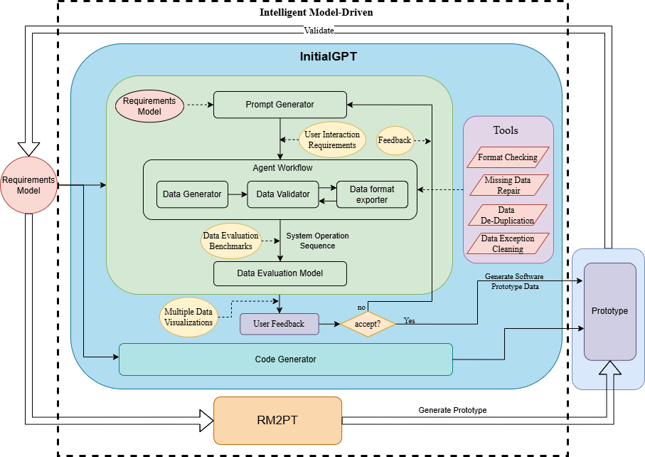

Requirements errors are one of the reasons for the failure of computer software projects, and in serious cases, they can cause great disasters. With the rapid development of information technology, the requirements of computer software systems become increasingly complex and variable. Traditional methods of requirements validation, such as the preparation of requirements documents and requirements review meetings, are not only inefficient, but also susceptible to human factors, resulting in insufficient accuracy and completeness of requirements validation.
Rapid prototyping, as an effective requirement validation method, helps development teams and stakeholders to better understand and validate the requirements by rapidly building runnable software prototypes. The current state-of-the-art method RM2PT is able to rapidly model software prototypes from formal requirements in UML diagrams by Generate software prototype systems, complemented by system operation contracts in Object Constraint Language (OCL), enabling customers to visually validate their requirements, thus easily discovering misunderstandings and uncertainties in the requirements.
However, these generated software prototypes do not contain any initial data. Software prototype data generation has been a key bottleneck in the prototyping process, and traditional approaches usually rely on hiring domain experts to manually write the prototype data for requirements validation of software prototypes. This is not only complex, time-consuming, inefficient and costly to manually write, but also difficult to meet the requirements of rapid iteration due to low user feedback iteration efficiency and high tendency to introduce human errors.
Inspired by the success of language models in text generation, we propose a data generation method, InitialGPT.
Based on the above challenges, this research aims to propose an automatic software prototype data generation method to aid requirements validation InitialGPT, which improves the efficiency and accuracy of rapid prototyping to validate requirements by automatically generating initial data that meets the requirements without the need for time-consuming and laborious handwriting and manual inputs, and thus improves the quality of software.
The demo video and introduction video are described below.
InitialGPT code is found at github.
We have integrated the InitialGPT installation of this tool on RM2PT, you can click here to download.
RM2PT (ICSE’19, ICSE’22, ICSE’23,ICSE’24) : The method RM2PT, which can generate prototypes from requirements models automatically to support requirements validation and evolution.

InputGen (ICSE’23, ICSE’24) : The method InputGen, which extends and enhances the prototypes generated by RM2PT. It automates the generation of prototype inputs to improve the efficiency of requirements validation.

InitialGPT is a method that extends the functionality of RM2PT and InputGen.

An overview figure of InitialGPT is shown in Fig:
We have integrated the InitialGPT installation of this tool on RM2PT, you can click here to download and use it without installing the step by step process below.
InitialGPT can as an advanced feature of RM2PT. We recommend you to use InitialGPT in RM2PT. If you don't have RM2PT, download here.
Here is the step-by-step installation. Click here to download InitialGPT. Follow the steps below to install.


You can view the demo video before installing(in the motivation section).
In order to generate the prototype initial data, you need a requirement model, the RM2PT project. For creating or importing a RM2PT project，you can see the tutorial here. We recommend importing RM2PT projects from Git, which is avaliable at CaseStudies.


The input to InitialGPT is a UML requirements model with OCL constraints. The model includes: a conceptual class diagram, a use case diagram, system sequence diagrams, contracts of and system operations.
A conceptual class diagram: A conceptual class diagram is a concept-relation model, which illustrates abstract and meaningful concepts and their relations in the problem domain, in which the concepts are specified as classes, the relations of the concepts are specified as the associations between the classes, and the properties of the concepts are specified as the attributes of the classes.
A use case diagram: A use case diagram captures domain processes as use cases in terms of interactions between the system and its users. It contains a set of use cases for a system, actors represented a type of users of the system or external systems that the system interacts with, the relations between the actors and these use cases, and relations among use cases.
System sequence diagrams: A system sequence diagram describes a particular domain process of a use case. It contains the actors that interact with the system, the system and the system events that the actors generate, their order, and inter-system events. Compared with the sequence diagram in design models, a system sequence diagram treats all systems as a black box and contains system events across the system boundary between actors and systems without object lifelines and internal interactions between objects.
Contracts of system operations: The contract of a system operation specifies the conditions that the state of the system is assumed to satisfy before the execution of the system operation, called the pre-condition and the conditions that the system state is required to satisfy after the execution (if it terminated), called the post-condition of the system operation. Typically, the pre-condition specifies the properties of the system state that need to be checked when system operation is to be executed, and the postcondition defines the possible changes that the execution of the system operation is to realize.
A good prompt template approach is the key to data generation, which can effectively prompt the large language model to generate data so as to better utilize the performance of the large model.
Since LLMs has the limitation of data response time and length for the api usage, we have designed two sets of templates for LLMs, which are used for generating general amount of data and large amount of data respectively.

The general prompt template consists of three main components. The Initial Information Prompt is a well-tested general prompt, the Input section consists of user interaction information and domain entity information automatically generated by the requirements
model, and the Output section specifies the format of the output data.
The Large Data Amount Prompt Template is similar to the General Prompt Template, but is generated for a single entity, 40 at one time, and post-processed until the final required number is fully generated.

After you import a requirements model, first, we use the RM2PT to generate a prototype from the requirements model by right click on cocome.remodel -> RM2PT-> OO Prototype-> Generate Desktop Prototype

after you generate a prototype, we use the InitialGPT to refactor the prototype from the requirements model by right click on cocome.remodel -> RM2PT-dev-> InitialGPT, and update the project.

Run the refactored prototype to validate the requirements by right click on COCOMEPrototype -> pom.xml-> run-> maven build .

After automatically refactoring and enhancing the generated prototype by the tool InitialGPT, the enhanced prototype contains two advantages as follows:
Automatic initial data generation of prototypes. The enhanced prototypes can automatically generate large amounts of prototype initial data for requirements validation via a large language model.
Automatic Data Prompts Generation for large language models. A method is proposed to automatically generate prompts for large language models based on the requirement model, aiming to prompt GPT-3.5 to generate more compliant, reasonable, and effective data that satisfies the requirements.
Automated evaluation of generated data. To facilitate users in quickly understanding data quality, we have designed an automatic evaluation feature based on specific metrics.
In the system status, Click on the initial data generation button and in the data generation screen


Click on Generate Settings and then choose whether to use a proxy on the pop-up page. If you do, please delete "no" and fill in your own proxy port, then fill in your openai key.
here you can set the number of entities we want to generate for each entity. Also, you can add as many prompts as you want to the note box.

After the settings have been input, click on the Generate Prompt button and Prompt will be generated automatically. If you are not satisfied with the generated prompt template, you can further modify it.

Then, click the "Generation" button. Here, you can see the time corresponding to the number of generated entities we have tested.

After successful generation, you can view the generated entities in the table view or yaml view, and you can also modify them to better match your requirements.

To facilitate users in quickly understanding data quality, we have designed an automatic evaluation feature based on specific metrics. You can click the "Automatic Evaluation" button to view the generated data on the panel. To start the evaluation, click the "Evaluation" button on the right.


Finally, click on the "load data" button to import the initial data into the prototype.
At the same time, the generated data is saved, and you can click on the Load File button to load the file directly next time without having to generate it again.

For more details, please see CaseStudies.
In this section, we first present the case studies and then show the evaluation results based on the case studies.
This paragraph discusses the reuse of four case studies to demonstrate the validity and functionality of InitialGPT. The case studies include systems that are widely used in daily life, namely a supermarket system (CoCoME), a library management system (LibMS), an automated teller machine (ATM) and a loan processing system (LoanPS). More details of the requirements models can be found at GitHub https://github.com/RM2PT/CaseStudies.
The complexity of these requirement models is shown in Table 1. InitialGPT's experimental settings are 2.8GHz Intel Core i5, 16GB DDR3, JDK 11 (JDK 11 has been embedded directly into RM2PT). The large model is tested using the api of gpt-4o,gpt-4 and gpt-3.5-turbo. We have a concise training on utilizing CASE tools for requirements validation.

In this section, we first present the case studies and then show the evaluation indicators with evaluation results based on the case studies.
InitialGPT can refactor the prototype generated by RM2PT in combination with gpt to automatically generate the initial data. In order to assess effectiveness, we conducte a comparison between two versions:
(1) The prototype generated by RM2PT tool and (2) The improved prototype that refactoring by InitialGPT.
The experiments involve validating requirements through the generation of initial data using InitialGPT or manual writing of initial data. The results of the experiments are shown in Table II.

We calculate the time efficiency of using the prototype for requirements validation. As shown in Table 3 on average, it takes a developer 29.37 minutes to write 100 initial entities data, while ChatGPT takes only 2.96 minutes to automatically generate, and the enhanced prototype is able to **improve the efficiency of requirements validation by 6x times **over a manually written prototype, and the more initial data required, the more time is saved.